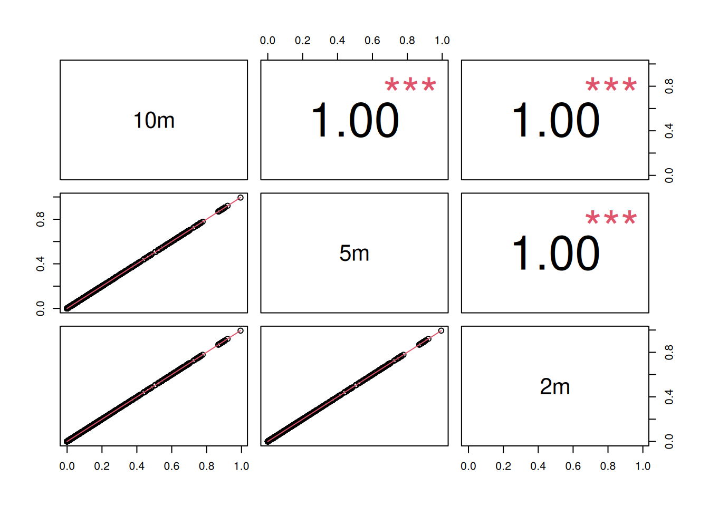
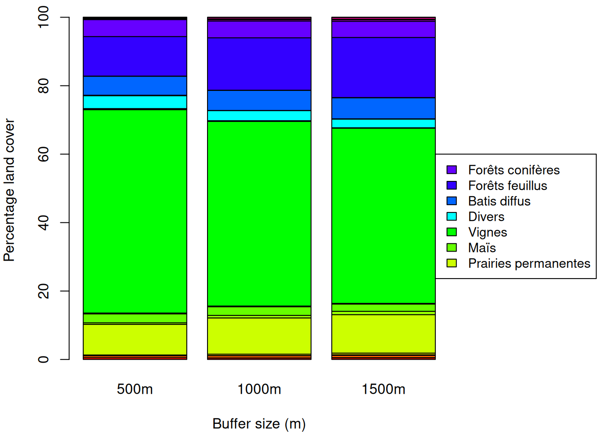

| BACCHUS | LepiBats | OSCAR | |
|---|---|---|---|
| RPG | 215 | 25 | 17 |
| RPG_C | 57 | 4 | 0 |
| OSO | 0 | 17 | 3 |
Exploration de la couverture du sol : RPG + OSO
Objectif
L’objectif de ce document est d’explorer comment évaluer la couverture du sol autour des sites d’échantillonnage et leur historique dans les années précédant les relevés. L’idée est d’utiliser différentes sources de données, listés selon leur priorités:
- Le RPG qui provient du jeu de donnees
RPG sequence de culture(Girault, B. et Philippe M. 2025 https://doi.org/10.57745/VMYCYM) - Le RPG complété (Cantelaube, P. et Lardot B. 2024 https://doi.org/10.57745/6FNRWO)
- La carte d’occupation des sols du CES OSO – THEIA (Inglada, J., et al. (2017). https://geodes-portal.cnes.fr/)
Les 338 sites de la Gironde (33) seront utilisés comme cas d’étude.
Couverture du sol en Gironde en 2022
Pour obtenir la couverture du sol aux coordonnées des sites, nous pouvons utiliser directement les données en vecteur puis extraire la classe (1) du RPG, ou (2) du RPG complété, ou (3) des données OSO selon leur disponibilité (Table 1).
| BACCHUS | LepiBats | OSCAR | |
|---|---|---|---|
| OSO_Coniferes | 0 | 17 | 0 |
| OSO_Prairie | 0 | 0 | 1 |
| OSO_UrbainDiff | 0 | 0 | 1 |
| OSO_Vignes | 0 | 0 | 1 |
| RPG_Blé tendre | 0 | 2 | 0 |
| RPG_Divers | 2 | 0 | 3 |
| RPG_Légumes ou fleurs | 0 | 2 | 0 |
| RPG_Maïs grain et ensilage | 0 | 8 | 0 |
| RPG_Orge | 1 | 0 | 0 |
| RPG_Tournesol | 0 | 1 | 0 |
| RPG_Vignes | 212 | 12 | 14 |
| RPGC_Vignes | 57 | 4 | 0 |
La plupart des relevés ont été effectués dans des vignes dans des parcelles inclues dans le RPG (Table 2). Pour 61 sites, l’information n’était disponible que dans le RPG Complété. Il y a aussi 17 relevés effectués dans des forêts de conifères (données OSO), et 8 dans des champs de mais (données RPG).
Harmonization de la couverture du sol
Création d’une couche raster
Pour pouvoir calculer l’occupation du sol sur un buffer, il faut superposer les données vectoriels. Le plus simple est de faire le croisement en raster, avec une grille de 10m de résolution spatiale. Un des enjeux majeur est l’harmonisation des classes entre RPG, RPG complété et OSO.
Pour le moment, l’harmonisation et la simplification des classes d’occupation du sol est dans le fichier classes.csv. Il y a 38 classes différentes (Table 3).
| info_grp_id | nom_grp_culture |
|---|---|
| 1 | Blé |
| 2 | Maïs |
| 3 | Orge |
| 4 | Autres céréales |
| 5 | Colza |
| 6 | Tournesol |
| 7 | Autres oléagineux |
| 8 | Protéagineux |
| 9 | Plantes à fibres |
| 10 | Soja |
| 11 | Gel (surfaces gelées sans production) |
| 15 | Légumineuses à grains |
| 16 | Fourrage |
| 17 | Estives et landes |
| 18 | Prairies permanentes |
| 19 | Prairies temporaires |
| 20 | Vergers |
| 21 | Vignes |
| 22 | Fruits à coque |
| 23 | Oliviers |
| 24 | Autres cultures industrielles |
| 25 | Légumes ou fleurs |
| 28 | Divers |
| 29 | Batis denses |
| 30 | Batis diffus |
| 31 | Zone industrielles et commerciales |
| 32 | Route |
| 33 | Forêts feuillus |
| 34 | Forêts conifères |
| 35 | Surfaces Minérales |
| 36 | Plages et dunes |
| 37 | Glaciers ou neiges |
| 38 | Eau |
| BACCHUS | LepiBats | OSCAR | |
|---|---|---|---|
| Batis diffus | 0 | 0 | 1 |
| Blé | 0 | 2 | 0 |
| Divers | 2 | 0 | 3 |
| Foret conifères | 0 | 17 | 0 |
| Légumes ou fleurs | 0 | 2 | 0 |
| Maïs | 0 | 8 | 0 |
| Orge | 1 | 0 | 0 |
| Prairies permanentes | 1 | 0 | 1 |
| Tournesol | 0 | 1 | 0 |
| Vignes | 268 | 16 | 15 |
L’occupation du sol issue des données en raster (Table 4) est similaire aux données extraites des couches vectorielles (Table 2).
Buffer
A partir de cette couche raster, il est facile d’extraire l’occupation du sol par buffer.

Le pourcentage de vignes diminue avec la taille du buffer, et à l’inverse, le pourcentage de forêts de feuillus augmente, ce qui semble cohérent (Figure 2).
Les proportions de vignes par taille de buffer sont très corrélés (Figure 3), ce qui suggère l’utilisation d’une seule taille de buffer.

Série temporelle
Nous avons besoin de l’historique de l’occupation du sol sur la plus grande période possible. Les données RPG sont disponibles de 2015 à 2023. Les données RPG complété sont disponible de 2016 à 2022. Les données OSO sont disponibles de 2016 à 2023. La période commune est donc 2016-2022.
La classification OSO n’est pas constante sur la période et passe de 17 à 23 classes. Cela affecte surtout les cultures qui seront majoritairement masquées par les donnees RPG.

Extraction ponctuelle

La majorité des parcelles a un seul type d’occupation du sol sur la période d’étude: surtout des vignes, ou des forêts de conifères (Figure 5, Table 6).
Il peut y avoir des incohérences de classification comme le batis diffus en 2016 qui devient des vignes sur le reste de la période d’étude (Table 5).
| fcov_ts | Freq |
|---|---|
| Vignes,Vignes,Vignes,Vignes,Vignes,Vignes,Vignes | 277 |
| Forêts conifères,Forêts conifères,Forêts conifères,Forêts conifères,Forêts conifères,Forêts conifères,Forêts conifères | 15 |
| Maïs,Maïs,Maïs,Maïs,Maïs,Maïs,Maïs | 5 |
| Blé,Maïs,Blé,Maïs,Maïs,Vignes,Vignes | 4 |
| Vignes,Vignes,Vignes,Vignes,Prairies permanentes,Divers,Divers | 3 |
| Batis diffus,Vignes,Vignes,Vignes,Vignes,Vignes,Vignes | 2 |
| Gel (surfaces gelées sans production),Autres céréales,Vignes,Vignes,Vignes,Vignes,Vignes | 2 |
| Vignes,Autres céréales,Vignes,Vignes,Vignes,Vignes,Vignes | 2 |
| Vignes,Vignes,Vignes,Vignes,Gel (surfaces gelées sans production),Gel (surfaces gelées sans production),Vignes | 2 |
| Vignes,Vignes,Vignes,Vignes,Vignes,Vignes,Divers | 2 |
| ucov_ts | Freq |
|---|---|
| Vignes | 277 |
| Forêts conifères | 15 |
| Maïs | 5 |
| Blé,Maïs,Vignes | 4 |
| Divers,Prairies permanentes,Vignes | 4 |
| Autres céréales,Vignes | 3 |
| Blé,Maïs | 3 |
| Autres céréales,Gel (surfaces gelées sans production),Vignes | 2 |
| Batis diffus,Vignes | 2 |
| Blé,Maïs,Tournesol | 2 |
Extraction par buffer de 1000m

Le pourcentage de vignes sur les buffer de 1km est très constant sur la période d’étude (Figure 6).
La présence d’autres céréales est plus importante en 2016-2017 que sur 2018-2022 (Figure 7). Les batis diffus sont aussi plus nombreux en 2016-2019 que sur la periode 2020-2022. Y a t-il un effet de changement de protocole pour mesurer ces classes ?
Résumé
- Il est possible de créer une couche d’occupation du sol en combinant les données RPG, RPG complété et OSO, avec une résolution fine de 10m. L’opération est assez rapide et produit un raster de 215Mo pour la periode 2016-2022 sur un département (Gironde).
- Les extractions de la couverture du sol par buffer et pour les series temporelles sont simplifiées.
- L’étape d’homogénéisation des classes est critique et doit être vérifiée/completée par tous.
- Il faut aussi s’assurer que les données OSO et RPG ont un protocole constant sur la période d’étude, sinon cela peut créer des biais dans les futures analyses.